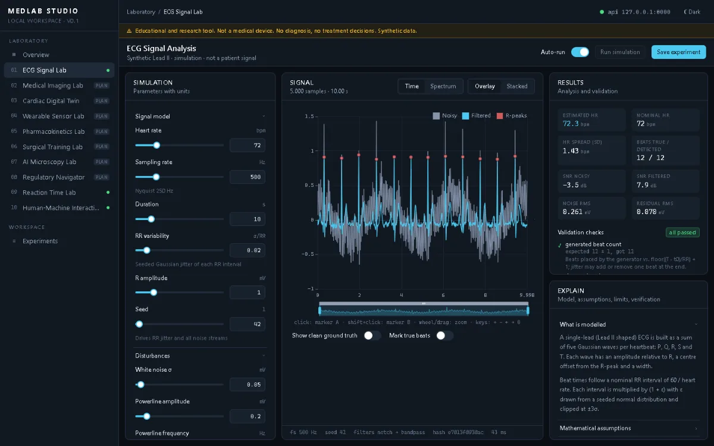

In Entwicklung · v0.2 · 3 von 10 Laboren nutzbar
MedLab Studio
Eine modulare Plattform zum Lernen und Experimentieren in der Medizintechnik: Signalverarbeitung, Reaktionszeit-Messung und Mensch-Maschine-Interaktion an einem Ort. Gedacht für Bildung und Demonstration – kein Medizinprodukt, alle Signale sind synthetisch.
- Zum Ausprobieren
- Ein synthetisches EKG erzeugen, 50-Hz-Netzbrummen und Muskelartefakte darüberlegen und zusehen, wie Notch- und Bandpassfilter das Signal zurückholen – inklusive R-Zacken-Erkennung nach Pan–Tompkins und Abgleich mit der bekannten Wahrheit.
- Funktioniert bereits
- ECG Signal Lab, Reaction Time Lab (Reaktionszeit im Browser messen, mit Unsicherheitsbudget) und HMI Lab (zwei Oberflächen einer simulierten Infusionspumpe im A/B-Vergleich). Experimente lassen sich speichern und per Ergebnis-Hash reproduzieren.
- Mein Beitrag
- Eigenes Projekt: Konzept, Architektur mit gemeinsamer Experiment-Infrastruktur, Backend, Oberfläche, Tests und Dokumentation der Modelle.
- Als Nächstes
- Ein Wearable Sensor Lab und ein Pharmacokinetics Lab für Arzneimittelkonzentrationen im Kompartimentmodell.
Läuft lokal mit eigenem Backend – eine öffentliche Demo gibt es noch nicht. Die Startanleitung steht im README.